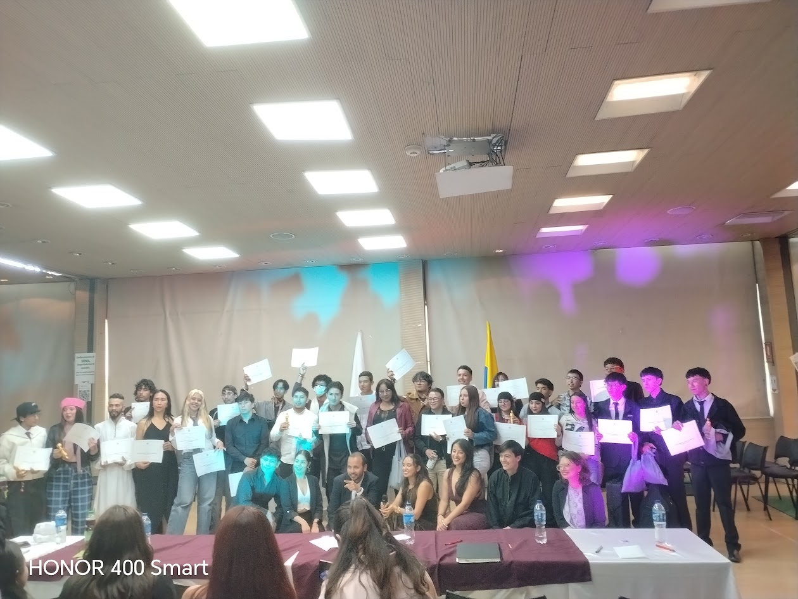

Conclusiones
Y ya Terminando este recorrido de esta experiencia tan significativa afirma que el Sena también forma el Crecimiento artístico y tecnológico. Estos espacios motivan a los estudiantes a seguir participando en estos espacios creando siempre e compañerismo, la unión y trabajo en equipo.
